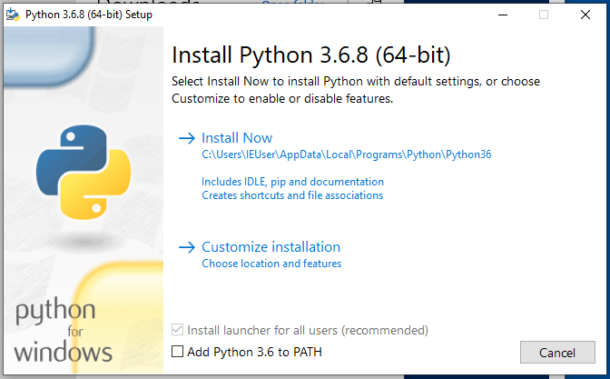

Instalación de Python¶
En esta guía vamos a ver distintas formas de realizar la instalación de la versión específica de Python que se utilizará en la cátedra para distintos sistemas operativos.
El objetivo es que todos los alumnos que cursen la cátedra puedan instalar en sus sistemas operativos la versión específica de Python que vamos a usar dentro de la cátedra.
El mecanismo para esto es utilizar una herramienta de manejo de versiones para Python (Python Versión Manager) en los sistemas operativos Linux y MacOS.
En el caso del sistema operativo Windows no vamos a usar esta herramienta ya que no funcionan del todo bien, y tampoco algunas alternativas que probamos. En este caso vamos a instalar la versión específica de Python que utilicemos.
¿Por qué usar una herramienta para manejar versiones?¶
La idea de usar este tipo de herramientas son:
- Instalar prácticamente cualquier versión de Python (o del lenguaje que sea)
- Permitir tener instaladas múltiples versiones
Otro objetivo para esta cátedra es lograr que todos ustedes tengan exactamente la misma versión de Python.
La herramienta que vamos a usar es pyenv
Linux y MacOS¶
Instalación con Git (Linux y MacOS) RECOMENDADA¶
Hacer el checkout de pyenv en el directorio donde quieras que se instale.
Un buen lugar puede ser $HOME/.pyenv.
git clone https://github.com/pyenv/pyenv.git ~/.pyenv
Define la variable de entorno PYENV_ROOT para tener disponible el path donde
fue clonado el repositorio y agrega $PYENV_ROOT/bin a la variable $PATH para
tener acceso al comando pyenv en la terminal.
echo 'export PYENV_ROOT="$HOME/.pyenv"' >> ~/.bash_profile
echo 'export PATH="$PYENV_ROOT/bin:$PATH"' >> ~/.bash_profile
Warning
- Si usas ZSH modifica el comando con
~/.zshrcen lugar de~/.bash_profile. - Para Ubuntu y Fedora usa
~/.bashrcen lugar de~/.bash_profile.
Finalmente para terminar de configurarlo y tener el autocompletado en la consola ejecuta el siguiente comando:
echo -e 'if command -v pyenv 1>/dev/null 2>&1; then\n eval "$(pyenv init -)"\nfi' >> ~/.bash_profile
Warning
Al igual que en el paso anterior reemplaza con ~/.zshrc o ~/.bashrc en
el comando según corresponda.
Luego reiniciar la terminal para que tome los cambios.
Info
Guía completa en el README de pyenv.
Uso de pyenv¶
Para buscar que versión de Python queremos instalar podemos usar:
pyenv install 3.6.8
Ahora podemos seleccionar esta versión como global
pyenv global 3.6.8
o como versión local en el directorio que nos encontremos
pyenv local 3.6.8
Instalación con brew (MacOS)¶
Se puede instalar pyenv usando el manejador de paquetes
Homebrew para MacOS.
brew update
brew install pyenv
Instalación en Windows¶
Desde instalador¶
Descarga el instalador aquí
Warning
Tener en cuenta de seleccionar el box de abajo para agregar el ejecutable de Python al PATH del sistema.

Otros instaladores: https://www.python.org/downloads/release/python-368/
Ahora tenemos la versión de Python que necesitamos en nuestro sistema y estamos listo para utilizarlo.